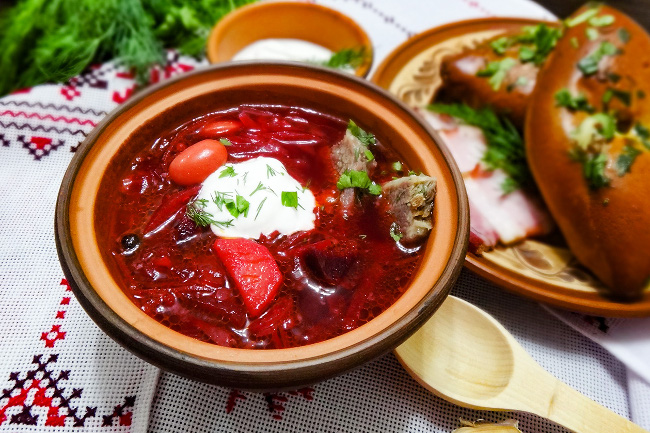

Черниговский борщ
Порции: 8
Время приготовления: 3 часа
Пассивное время: 8 часов
Ингредиенты
1) 500 гр Говядина или свинина
2) 600 гр Белокочанная капуста
3) 400 гр Свекла
4) 400 гр Картофель
5) 200 гр Кабачок
6) 200 гр Баклажан / по желанию
7) 1 шт Яблоко / кислое, крупное
8) 50-80 гр Фасоль / сухая
9) 80 гр Корень сельдерея или петрушки
10) 2 шт Репчатый лук
11) 2 шт Морковь
12) 2 шт Помидор
13) 40 гр Топленое масло
14) 40 мл Растительное масло
15) 1 шт Лавровый лист
16) 50 гр Томатная паста
17) 1 ст.л. Уксус или лимонный сок
18) по вкусу Душистый перец горошком
19) по вкусу Черный перец горошком
20) по вкусу Соль
21) по вкусу Сахар
22) для подачи Зелень
23) для подачи Сметана
24) для подачи Перец черный молотый
Процесс приготовления
1. Сухую фасоль на ночь замочить в теплой воде с добавлением половины чайной ложки соды.
2. Мясо выложить в кастрюлю, залить 4-мя литрами холодной воды, довести до кипения
и тщательно снять весь шум. Снизить нагрев, добавить соль по вкусу и при очень слабом кипении,
без крышки, варить бульон в течение полутора-двух часов. Мясо должно стать совсем мягким.
3. Предварительно замоченную фасоль откинуть на дуршлаг и промыть проточной водой.
Затем переложить в другую кастрюлю, залить водой, довести до кипения и варить 15-20 минут.
Слить воду, снова залить холодной водой и варить фасоль до готовности. Это займет минут 40.
Фасоль при варке не солить.
4. Свеклу очистить и нашинковать тонкой и короткой соломкой. Выложить в сковородку,
добавить немного растительного масла и столовую ложку уксуса или лимонного сока. Посыпать
сахаром и тушит минут 30-35 на слабом огне.
5. Репчатый лук нарезать небольшими кусочками.
6. Морковь почистить и также нарезать тонкой соломкой, впрочем можно и потереть на крупной терке.
7. Корень петрушки или сельдерея натереть на крупной терке.
8. Помидоры нарезать небольшими кусочками.
9. В сковородке разогреть топленое масло и выложить лук, корень сельдерея или петрушки и морковь.
Помешивая, обжарить до мягкости, после чего добавить томатную пасту и нарезанные помидоры.
Немного посолить и поперчить черным молотым перцем , перемешать и пассеровать овощи до
готовности на средне-слабом огне, не допуская подгорания томатной пасты.
10. Капусту тонко нашинковать.
11. Картофель очистить и нарезать небольшим кубиком.
12. Кабачок очистить от семян, нарезать небольшим кубиком и обжарить на
топленом масле до легкой золотистой корочки. Если вы используете баклажан,
то его нарезать и поджарить так же, как и кабачок.
13. Из бульона достать мясо, снять с костей и нарезать на небольшие кусочки.
Вернуть мясо в кастрюлю, а кости выбросить.
14. Добавить в бульон черный и душистый перец горошком, а также лавровый лист.
15. Добавить в бульон картофель и капусту. Всыпать в кастрюлю фасоль.
Варить примерно минут 15, затем добавить в кастрюлю пассерованные лук с морковью
и кабачки с баклажанами.
16. Яблоко очистить от кожуры и семян и нарезать кубиком. Добавить в кастрюлю с
бульоном и овощами.
17. Варить 10 минут, затем добавить в черниговский борщ тушеную свеклу.
Перемешать и при необходимости поправить на соль и перец.
18. Варить свеклу 5 минут и выключить огонь. Удалить лавровый лист.
Закрыть кастрюлю крышкой.
19. При подаче добавить в тарелки нарезанную зелень и сметану.
При желании нарезать в тарелку зубчик чеснока и посыпать черным молотым перцем.
20. Подавать с пампушками с чесноком, со свежим черным хлебом и нарезанным салом.
21. Как и любой борщ, черниговский его вариант намного вкуснее на следующий день.